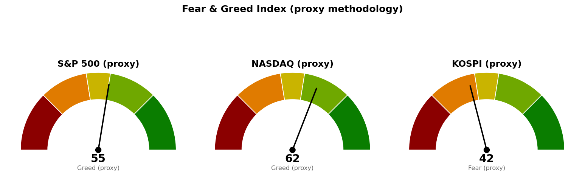

| 직전에 건 조건 | 판정 | 근거 |
|---|---|---|
| S&P 500 다음 지지 7,596 (종가 하회) | 진행 중 | 10/1 장중 저가 7,617 · 현재 7,633 |
| S&P 500 사다리 2차 7,578 (장중 터치) | 진행 중 | 10/1 장중 저가 7,617 |
| S&P 500 기준선 7,794 (종가 상회) | 미충족 | 10/1 장중 고가 7,684 |
| 나스닥 다음 지지 · 사다리 1차 26,680 | 진행 중 | 10/1 장중 저가 26,734 (54포인트 위) |
| 나스닥 기준선 27,159 (종가 상회) | 미충족 | 10/1 장중 고가 27,014 |
| 코스피 다음 지지 6,830 (10/1 종가 하회) | 미충족 | 10/1 마감 6,950 · 장중 저가 6,765 |
| 코스피 기준선 7,054 (종가 상회) | 미충족 | 10/1 고가 6,971 |
| 세 지수 취소선 | 미충족 | 어느 지수도 닿지 않음 |
| 30년 금리 5.286% 아래 (종가) | 미충족 | 9/30 종가 5.638% · 10/1 장중 5.643% |
직전 브리핑이 "다음 세션에 볼 것"으로 적은 코스피 10월 1일 종가는 6,950으로 6,830 위에서 마쳤습니다. 장중에는 6,765까지 내준 뒤 회복했으므로 "못 지키면 어디까지"로 적은 6,830 아래를 장중에만 다녀왔고 종가 판정에는 해당하지 않습니다. 기준선·도착지·다음 지지·사다리·취소선은 세 지수 모두 직전과 같은 가격이며, 옮긴 가격은 없습니다. 직전 판단에서 정정할 오류는 없습니다.
20일선·50일선은 지수이동평균(최근 가격에 무게를 더 둔 평균)입니다. 미국 두 지수는 10월 1일 개장 약 1시간 반 시점 값이고, 이평선도 이 장중 값을 넣어 계산됐습니다.
현재가가 50일선 위 1포인트에 있고, 다음 지지 7,596은 한 세션 안에 닿는 거리입니다.
기준선과 다음 지지 모두 한 세션 안에 닿는 거리입니다. 오늘 시가 26,992에서 밀렸고, 9월 30일에 이어 기준선 아래에서 꺾였습니다.
코스피는 10월 1일 50일선을 다시 넘어 마쳤고, 기준선 7,054까지는 104포인트로 한 세션 안에 닿는 거리입니다. 미국 두 지수는 오늘 장중 약세이고 S&P 500은 9월 30일에 이어 이틀째 내리는데, 코스피는 10월 1일 반도체를 중심으로 올라 방향이 다릅니다. 코스피의 다음 시가는 오늘 밤 뉴욕 종가와 고용보고서가 먼저 정하므로 코스피 계획은 미국장 결과에 종속되며, 코스피 단독 반등으로 결론을 내지 않습니다. 경로를 말할 근거가 없어 이번에도 방향을 말하지 않고 기준선과 두 갈래만 냅니다. 세 지수 회차를 전부 집행하면 계좌의 16%(22,319,744원), 모두 취소선에서 멈추면 계좌 -0.23%(-318,663원)이며 갭으로 취소선을 건너뛰면 손실은 더 커집니다.
| 지수 | 값 | 등락 | 시가 | 고가 | 저가 |
|---|---|---|---|---|---|
| S&P 500 (10/1 장중) | 7,633 | -0.25% | 7,666 | 7,684 | 7,617 |
| 나스닥 종합 (10/1 장중) | 26,806 | -0.20% | 26,992 | 27,014 | 26,734 |
| 코스피 (10/1 마감) | 6,950 | +1.64% | 6,814 | 6,971 | 6,765 |
| 니케이 225 (10/1 마감) | 68,987 | +3.35% | 67,107 | 68,995 | 67,082 |
미국 주도섹터는 20일 기준 기술 하나이며 직전 +6.33%에서 +7.38%로 벌어졌습니다. 오늘 장중 지수보다 강한 업종은 에너지(유가 선물 +2.39%와 같은 날)·기술·유틸리티·산업재·필수소비재입니다.
한국 섹터는 테마형 ETF 기준이라 미국 업종 ETF와 성격이 다릅니다. 20일 기준 지수를 이기는 곳은 반도체 하나로 줄었고, 건설은 다시 0 아래로 내려갔습니다. 이번 브리핑에서는 종목 발굴을 돌리지 않았습니다.
| 항목 | 값 | 직전 대비 |
|---|---|---|
| 미국 경기선행지수 (2026년 8월) | 100.96 | 7월 100.89 대비 +0.06 · 직전과 같은 값 |
| 한국 경기선행지수 (2026년 8월) | 102.87 | 7월 102.81 대비 +0.06 · 직전과 같은 값 |
| 미 10년 명목금리 | 5.26% (9/29 확정) · 10/1 장중 지수 시세 5.283% | 확정치 새 값 없음 · 시세 9/30 5.293% 대비 -0.010%포인트 |
| 미 10년 기대물가 | 2.36% (9/30) | 새 값 없음 |
| 미 10년 실질금리 | 2.91% (9/29) | 새 값 없음 |
| 유가 (WTI) | 확정치 96.16달러 (9/29) · 선물 92.58달러 (10/1 장중) | 확정치 새 값 없음 · 선물 전일 90.42달러 대비 +2.39% |
| 달러지수 (광의) | 120.33 (9/25) | 새 값 없음 |
| 변동성지수 (VIX) | 17.23 (10/1 장중) | 전일 16.34 대비 +5.45% · 백분위 61.2 (직전 47.7) |
경기선행지수는 장기 평균을 100으로 놓고 경기 방향을 몇 달 앞서 보여주는 지표(OECD 작성)이며, 새 발표가 없어 해석도 직전과 같습니다. 오늘 유가 선물은 +2.39% 올랐는데 10년 금리 시세는 0.010%포인트 내려 서로 다른 방향이며, 기대물가 10월 1일 값이 아직 없어 유가 상승이 기대물가로 옮겨갔는지는 가르지 못합니다.
1. 미국 제조업체 "물가는 나쁘고 나아지지 않고 있다" (MarketWatch, 10/1) 제조업은 확장하고 신규 주문도 많지만 높은 에너지 가격과 새 관세가 성장을 누르고 있다는 내용입니다. 오늘 유가 선물 +2.39%와 같은 방향의 소식입니다. 30년 금리는 신규 종목 편입 재개 조건 5.286%보다 0.357%포인트 위(10/1 장중 5.643%)에 머물러 있습니다.
2. 9월 고용보고서 예고 — "적게 뽑고 적게 자르는" 흐름 지속 예상 (MarketWatch, 10/1) 고용보고서는 미국 10월 2일 발표이며, 미국 두 지수가 다음 지지 7,596 · 26,680 바로 위에 있어 발표 당일 봉이 하방 갈래 진입 여부를 가를 수 있습니다. 코스피 10월 2일 장은 발표 전에 끝나므로 그 결과는 다음 코스피 거래일 시가에 반영됩니다.
3. 마이크론 분기 실적 호조 언급 (CNBC 장전 체크리스트, 10/1) CNBC의 장전 점검 목록에 실린 한 줄이며 실적 수치는 담겨 있지 않습니다. 미국 기술 업종 20일 초과수익 +7.38%, 한국 반도체 +18.11%와 같은 쪽의 소식이고, 두 시장 모두 지수를 이기는 업종이 반도체·기술 하나에 몰려 있다는 구조는 직전과 같습니다.
279건을 받아 10건을 추렸고, 나머지 7건은 패밀리오피스 투자·경주마 경매·예측시장 거래량 등 지수 판단과 관계가 약해 뺐습니다.

세 점수 모두 공식 CNN Fear & Greed 지수가 아니라 모멘텀·상대강도·변동성·안전자산 선호 네 항목으로 계산한 대용 지표입니다. 변동성 항목은 자기 과거 3년 분포에서의 자리로 산출하며, 미국은 변동성지수 17.2가 백분위 61.2(755일), 코스피는 내재변동성 지수가 없어 20일 실현변동성 연율화 31.9%가 백분위 71.8(708일)입니다. 네 항목은 나스닥 62.9 · 55.2 · 38.8 · 88.6, S&P 500 57.6 · 46.4 · 38.8 · 75.2, 코스피 39.0 · 49.7 · 28.2 · 53.2입니다. 세 지수 모두 직전보다 내려갔고, 미국 두 지수의 하락분은 변동성 항목(변동성지수 백분위 47.7 → 61.2)에서 가장 컸습니다.
| 날짜 (한국시간) | 이벤트 | 확인할 것 |
|---|---|---|
| 10월 2일 05:00 | 뉴욕 마감 (미국 10/1) | S&P 500 7,596 · 나스닥 26,680 종가 위 유지 여부 |
| 10월 2일 15:30 | 코스피 마감 | 6,830 종가 위 유지 · 7,054 회복 여부 |
| 10월 2일 (미국) | 고용보고서 · 실업률 | 30년 금리 5.643%의 방향과 두 미국 지수 기준선 판정 |
| 10월 14일 (미국) | CPI | 물가 지표와 금리 |
| 10월 28일 (미국) | FOMC | 금리 결정 |
10월 2일 고용보고서·실업률은 경제지표 일정 조회(5일 범위)로 확인했으며 발표 시각은 조회되지 않았습니다. 10월 14일 CPI · 10월 28일 FOMC는 이전 브리핑이 적어 둔 일정이며 이번에 다시 확인하지 못했습니다.
장부 보유 16종목, 매도 기록 없음(직전과 같음). 계좌 평가액 139,498,400원(9월 21일 등록값). 국면은 S&P 500 200일 이동평균 7,217 대비 +6.02%(9/30 종가), 코스피 6,310 대비 +10.14%(10/1 마감)로 두 시장 모두 신규 진입이 가능한 국면입니다.
1. 매수 쪽 — S&P 500 1차 7,653(계좌의 3%, 4,184,952원)은 9월 30일 집행 대상이었는데 장부에 매수 기록이 없습니다. 매수했으면 수량·단가·날짜를 알려 주십시오. 다음 회차는 2차 7,578 장중 터치이며, 7,517을 일봉 종가로 잃으면 남은 회차를 멈춥니다. 2. 나스닥 1차 26,680(계좌의 3%)은 장중 터치로 집행합니다. 오늘 저가 26,734는 54포인트 위였습니다. 코스피는 지금 가격에 살 자리가 없고, 1차는 6,673입니다. 3. 나스닥이 종가로 27,159를 넘어도 그 가격에서 추격 매수하지 않습니다. 다음 브리핑이 27,289 위의 새 기준선으로 다시 잡습니다. 4. TQQQ (TQQQ) 50주는 나스닥 3배 추종이라, S&P 500 1차에 이어 나스닥 1차까지 집행되면 미국 지수 쪽 노출이 세 겹으로 겹칩니다. 5. 신규 종목 편입은 30년 금리가 종가로 5.286% 아래일 때 재개합니다(10/1 장중 5.643%). 6. 매도 신호 뒤 체결 기록이 없는 보유: 현대해상 (001450.KS) 10주는 9/29 50,500원 전량 매도 (목표 도달), 9/30 47,400원 전량 매도 (손절) 신호가 났고, 한화손해보험 (000370.KS) 50주는 9/28 7,920원 전량 매도 (목표 도달), 9/30 7,690원 전량 매도 (손절) 신호가 났습니다. AMD (AMD) 3주는 9/25 638달러 전량 매도 (목표 도달) 신호입니다. 매도했으면 수량·단가·날짜를 알려 주십시오. 7. 그 밖의 미집행 매도 신호는 USA Rare Earth (USAR) 7회 · Netflix (NFLX) 3회 · MP Materials (MP) · Alibaba (BABA) · GE Vernova (GEV) 각 1회로 직전과 같고, 장기 보유로 둔 Fluence Energy (FLNC) 6회 · LightPath (LPTH) 2회는 기록만 쌓입니다. 사실을 적을 뿐 매도를 권하는 것이 아닙니다.
다음 세션에 볼 것 하나 — 10월 2일 05:00 S&P 500 종가가 7,596 위인지입니다.
ATR(하루 평균 변동폭): 최근 14일 동안 하루에 오르내린 폭의 평균. · EMA(지수이동평균): 최근 가격에 더 무게를 준 평균 가격선이며 20일선·50일선은 이 방식입니다. · RSI(상대강도지수): 최근 14일 오른 폭과 내린 폭의 비율을 0~100으로 나타낸 값. · 20일 초과수익: 최근 20거래일 수익률에서 기준 지수 수익률을 뺀 값. · VIX(변동성지수): S&P 500 옵션에 반영된 향후 30일 예상 변동폭. · CPI: 소비자물가지수. · FOMC: 미국 연준의 금리 결정 회의. · 기대물가: 명목금리와 물가연동채 금리의 차이로 시장이 보는 평균 물가상승률. · 실질금리: 물가연동국채가 직접 주는 금리.
이 문서는 참고 정보이며 투자자문이 아닙니다. 투자 판단과 그 결과에 대한 책임은 투자자 본인에게 있습니다.